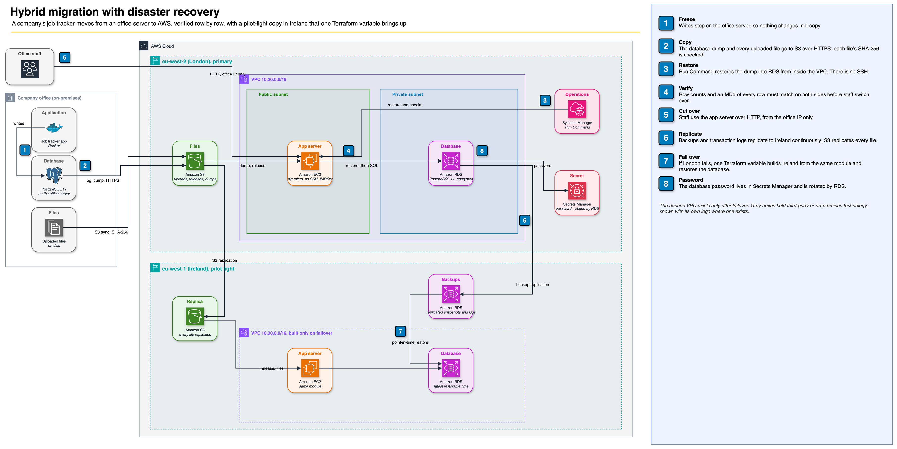

Walkthrough in five parts: what each piece does, why it was built that way, and how to talk about it in an interview.
Repo: github.com/gumagatsby/aws-hybrid-migration-dr

The "company server" is a Docker Compose stack: a Flask job-tracking app, PostgreSQL 17 and a folder of uploaded files, seeded with 500 jobs and 60 attachments (plus one added by hand).
| Piece | In the office | On AWS (London) | Why |
|---|---|---|---|
| App | Container on one server | EC2 t4g.micro, no SSH, IMDSv2 only | Rehost: the smallest change that gets it off the office box |
| Database | PostgreSQL in a container | Amazon RDS for PostgreSQL 17, private and encrypted | Re-platform: AWS takes over backups, patching and cross-region copies |
| Files | Local folder | S3, versioned, encrypted, TLS only | Durable, and replicable to another region |
| Password | Config file | Generated by RDS, held and rotated in Secrets Manager | Nothing secret in code or on disk |
The app needed one change: read its database password from Secrets Manager and its files from S3, chosen by environment variables.
scripts/migrate.sh runs five steps:
pg_dump and upload it to S3 over HTTPS.aws s3 sync, asking S3 to store a SHA-256 checksum of each file.| Measured | Result |
|---|---|
| Database | 501 rows, identical hash on both sides |
| Files | 61 of 61 SHA-256 matches |
| Downtime | 94 seconds from freezing writes to validated cutover |
Nothing runs in Ireland day to day. Two things are copied there continuously:
The same Terraform module that builds London builds Ireland. Recovery is one variable, dr_active = true, which restores the database to the latest restorable time and starts an app server pointed at the replica bucket.
| Strategy | Runs in the DR region | Recovery time | Cost while idle |
|---|---|---|---|
| Backup and restore | Backups only | Hours | Lowest |
| Pilot light (this project) | Replicated data; servers built on demand | Minutes | Storage and transfer |
| Warm standby | A smaller copy, always running | Minutes or less | A second, smaller site |
| Active-active | A full copy serving traffic | Near zero | Two full sites |
scripts/dr-drill.sh writes to London every five seconds for ten minutes, stops London's app server, turns on Ireland, and measures.
| Measured | Result |
|---|---|
| Recovery time (RTO) | 18 min 27 s, from outage to the app serving in Ireland |
| Data loss (RPO) | More than 10 minutes: none of the drill's 106 writes survived |
| Migrated data | All 501 jobs recovered |
| Replication lag | Ireland's latest restorable time was about 13.5 minutes behind London |
| Check | What it proves |
|---|---|
| App tests (pytest) | Filename sanitising, path traversal blocked, input validation, file storage round trip |
| Company server in CI | GitHub Actions builds the Docker Compose stack, seeds 500 jobs, uploads a file and reads it back |
terraform test, mocked AWS | Ireland runs nothing until failover; backups replicate even while it is off; database private, encrypted, password generated; DR restores to the latest time; app never opened to the whole internet; backups cannot be switched off |
| Checkov | No security misconfigurations; each deliberate exception documented with its reason |
Cost. Free-tier sizes, no NAT gateway, VPN or load balancer, and everything destroyed after the run, including the replicated backups AWS keeps after a database is deleted.
"Why not AWS DMS or Application Migration Service?"
The database was small and the business could stop writing for a couple of minutes, so a native dump and restore was the simplest method I could verify end to end. DMS is right when the database is large or cannot stop, because it keeps both sides in sync until cutover. MGN is right for lifting many servers unchanged. Both bill for the replication servers they run.
"How do you know nothing was lost?"
I don't rely on row counts alone. I hash every row on both sides with the time zone fixed, and compare every file's SHA-256 with the checksum S3 recorded on upload. The script only reports success when all of them match.
"What are RTO and RPO, and what did you get?"
RTO is how long until the service is back; RPO is how much recent data you lose. My drill measured 18 and a half minutes and more than ten minutes. The RPO came from backup replication lag, which is why a read replica is the first upgrade for a business that needs better.
"How does the app get its database password?"
RDS generates it and stores it in Secrets Manager, which rotates it. The app server's IAM role can read that one secret, and the app fetches it when it connects, so a rotation needs no redeploy.
"How would users find the app after failover?"
With a domain, a Route 53 failover record with a health check moves users automatically. I documented it rather than deploying it because a hosted zone has a monthly charge and needs a domain.
| Check | Result |
|---|---|
| App tests | 8 of 8 pass |
| terraform test | 6 of 6 pass |
| Checkov | Pass, with 14 documented exceptions |
| CI on GitHub | Green: app tests, company server in Docker Compose, Terraform tests, Checkov |
| Migration | Validated: 501 rows and 61 files matched; 94 s of frozen writes |
| DR drill | RTO 18 min 27 s; RPO more than 10 min |
| Teardown | All resources destroyed in both regions, including retained replicated backups |